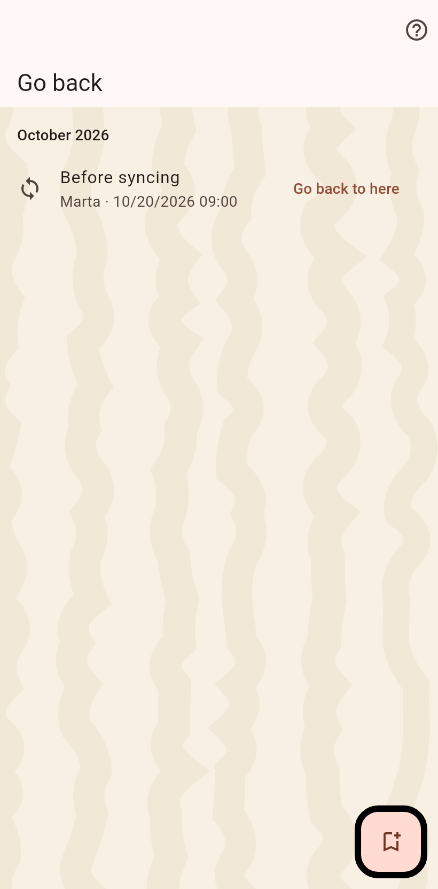

1. The moments
The list of moments: before every import and sync, a merge, an archive, and the ones marked by hand. Pick the one before the change.

2. Confirm
Everything after the moment is written to a file you keep, then removed; newer moments go with it. Partners keep what they received.
